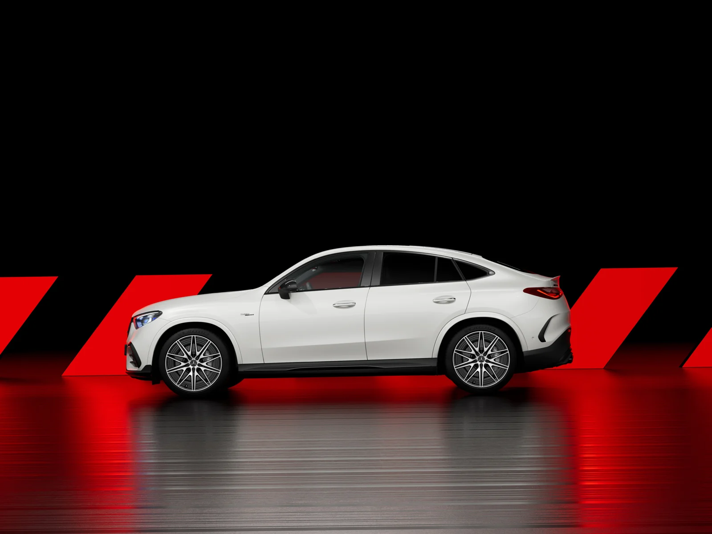
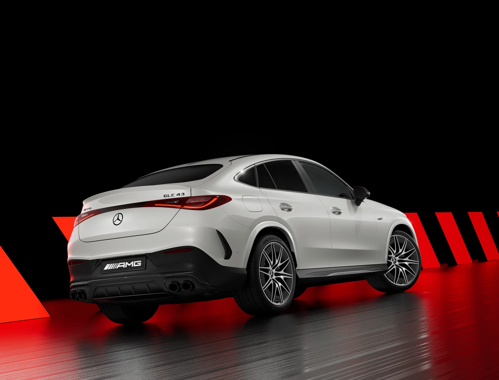
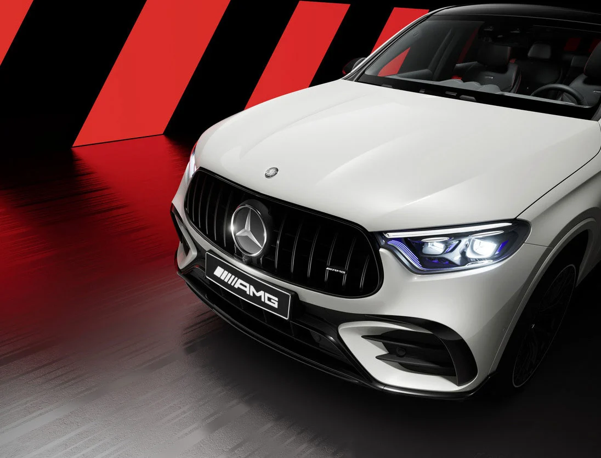
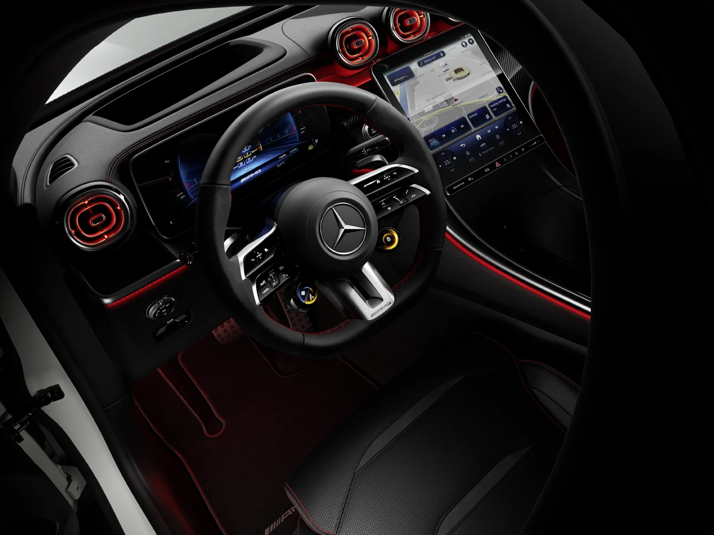

AMG · MY27
Mercedes-AMG GLC Coupé
Mercedes-AMG GLC Coupé의 선택 기준.
Mercedes-AMG GLC Coupé의 트림 구성과 제원, 내외장 색상을 한곳에서 비교하세요. 가격·월간 구매 조건·공개 재고로 이어서 확인할 수 있습니다.
한호만 팀장 · 안내 갱신 2026.09.27
MY27 안내와 MY26 비교 자료를 구분해 제공합니다.

MY26 차량 이미지 · 휠과 장비는 선택 트림에 따라 다릅니다.TRIM & PRICE
트림부터 비교하세요.
차량을 선택하면 구매 정보와 옵션·색상 안내가 함께 바뀝니다.
공식 가격이 확인되지 않은 구성은 별도로 표시합니다.
권장 소비자가: 2026.09.25 가격표 · 부가세 포함. 가격이 아직 확인되지 않은 트림은 이전 연식 가격으로 대체하지 않습니다.
BUYING YOUR MERCEDES-AMG GLC COUPÉ
지금 구매 정보.
Mercedes-AMG GLC 53 4MATIC+ Coupé
SPECIFICATIONS
제원 비교.
차체 크기, 엔진과 주행 수치를 같은 연식끼리 비교하세요.
확인된 국내 제원은 선택 트림별로 표시합니다. 공란 항목은 국내 인증 자료 확인 후 보완합니다.
카탈로그 참고 제원과 선택한 차량의 연식이 다를 수 있습니다. 미확인 수치는 다른 연식의 확정 수치로 표시하지 않습니다.
EQUIPMENT
주요 장비부터, 트림별 차이까지.
MY27 주요 사양을 비교합니다.
주요 장비를 먼저 살펴보세요.
기본 장비부터 선택 사양까지 확인하고, 아래에서 다른 트림과 비교하세요.
MY27 · Mercedes-AMG GLC 53 4MATIC+ Coupé
아래 차종 주요 장비도 함께 살펴보세요. 트림별 적용 여부는 구분해 안내합니다.
이 구성의 확정 장비 목록은 보완 중입니다. 아래 연식과 구성 안내를 함께 확인해 주세요.
MY26 Mercedes-AMG GLC Coupé 주요 장비
트림에 따라 기본·선택 적용이 달라집니다. 항목 아래에 표시된 구성도 함께 확인해 주세요.
디스플레이·오디오
- 와이드 스크린 콕핏
- LCD 센트럴 디스플레이
- 부메스터 3D 서라운드 사운드 시스템
외관·생활 편의
- 20인치 AMG 10 스포크 경량 알로이 휠
- 디지털 라이트
- 알루미늄 피니시 러닝보드
- 파노라마 슬라이딩 선루프
고민 중인 두 트림을 비교하세요.
연한 보라색은 확인된 사양의 차이입니다. 확인이 필요한 항목은 차이로 계산하지 않습니다.
MY26 주요 장비 참고
카탈로그에 소개된 장비입니다. 선택 트림의 기본 적용 여부와 주문 조합은 별도로 확인해 주세요.
- 20인치 AMG 10 스포크 경량 알로이 휠
- 디지털 라이트
- 360° 카메라가 포함된 주차 패키지
- 파노라마 슬라이딩 선루프
- 메탈 스트럭쳐 트림
- 부메스터 3D 서라운드 사운드 시스템
- 앞좌석 열선 및 통풍 시트
선택 사양은 함께 주문해야 하는 장비나 조합 제한이 있을 수 있습니다. 구매 전 선택 차량의 적용 조건을 확인해 주세요.
COLOUR & MATERIAL
외장과 실내, 나의 조합.
선택한 트림에 제공되는 색상을 표시합니다.
외장 컬러
폴라 화이트149U · 트림별 확인
옵시디안 블랙197U · 트림별 확인
베르데 실버188U · 트림별 확인
그라파이트 그레이831U · 트림별 확인
하이 테크 실버922U · 트림별 확인
스펙트럴 블루970U · 트림별 확인
MANUFAKTUR 하이 테크 실버 마그노734U · 트림별 확인
MANUFAKTUR 그라파이트 그레이 마그노818U · 트림별 확인
MANUFAKTUR 오팔라이트 화이트 브라이트885U · 트림별 확인
MANUFAKTUR 알파인 그레이956U · 트림별 확인
MANUFAKTUR 파타고니아 레드 메탈릭993U · 트림별 확인
내장 소재·컬러
사진은 해당 차종 카탈로그의 원본 이미지입니다. 일치하는 사진이 없는 색상은 색상칩으로 표시하며, 화면 색상과 실제 도장은 다를 수 있습니다.
IN DETAIL
차량을 더 가까이.
Mercedes-AMG GLC Coupé · 디자인
Mercedes-AMG GLC Coupé · 디자인
Mercedes-AMG GLC Coupé · 디자인
Mercedes-AMG GLC Coupé · 디자인 BENZDREAM ON YOUTUBE
한호만 팀장의 관련 영상.
영상 촬영 당시의 연식·구매 조건이 포함됩니다. 현재 조건은 위 구매 정보에서 확인하세요.
GLC 300 AMG, 1,500만원 할인할 때 사는 겁니다 | 9월 프로모션
YouTube에서 보기 ↗이제 너무 늦었습니다. 3-4월 물량도 완판. 아직도 사전예약 안한사람은 꼭 보세요. #GLC400 #GLC전기차 #GLC300AMG+
YouTube에서 보기 ↗벤츠 GLC 전기차 사전예약 폭발한 이유 #GLC일렉트릭 #GLC전기차 #GLC300AMG+
YouTube에서 보기 ↗함께 보는 상세 비교.
이전 연식의 상세 장비와 비교 설명도 이어서 볼 수 있습니다.
 한호만 · 벤츠 고양 전시장
한호만 · 벤츠 고양 전시장